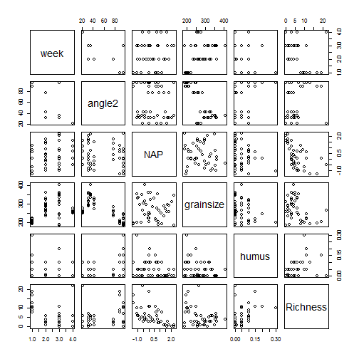

BL6024 - Quantitative Skills for Biologists using R
Lecture 5: More advanced linear models
Normality
If you measured the height of 1000 ten year old boys, what would you expect their height distribution to look like?
Height

Height cont
If you then measured the height of 1000 thirty year old men, what would you expect their height distribution to look like?
Height cont
Reality bites
Normally we don't have 1000 samples from each age or value on the x axis. In ecological research we typically only get one value of y per x e.g. one measurement of height per age class. We then assume the data point we have comes from a normal distribution.
When we fit the regression line it is as if it is running through a load of normal distributions, one for each x data point. Because the line won't fit through the points perfectly we're left with some residual variance around it. That's what we mean when we say the residuals are normally distributed.
LM to GLM
Linear models assume that your residuals:
- are normally distributed and
- have constant variance.
Normally distributed data with constant variance

Artificially messy data
Real world data

GLMs to the rescue
Generalized linear models enable you to fit models to data that don't meet the requirements of normality and equal variance in your residuals.
Types of data GLMs can handle
Specifically, you should use GLMs when the response variable is:
- count data expressed as proportions (e.g. logistic regressions);
- count data that are not proportions (e.g. log-linear models of counts);
- binary response variables (e.g. dead or alive);
- data on time to death where the variance increases faster than linearly with the mean (e.g. time data with gamma errors).
Properties of GLMs
A generalized linear model has three important properties:
- the error structure;
- the linear predictor;
- the link function.
The error structure - random component
You may specify a variety of different error distributions with a GLM:
- Poisson errors, useful with count data;
- binomial errors, useful with data on proportions;
- gamma errors, useful with data showing a constant coefficient of variation;
- exponential errors, useful with data on time to death (survival analysis).
The linear predictor - systematic component
This specifies the explanatory variables (\(X_1, X_2, ... X_k\)) in the model, more specifically their linear combination in creating the so called linear predictor; e.g., the linear prediction function is equal to \(\beta_0 + \beta_1x_1 + \beta_2x_2 + \beta_kx_k\) as we have seen in linear regression.
The link function
The link function specifies the link between the random (error structure) and systematic components (linear predictor). It says how the expected value of the response (your y value) relates to the linear predictor of explanatory variables
The link function
It uses maximum likelihood estimation (MLE) rather than ordinary least squares (OLS) to estimate the parameters.
Count data and Poisson Errors
glm(y~x, family = poisson)
Here your error structure is fit by specifiying the family.
Table
| Error | Link |
|---|---|
| Normal | identity |
| poisson | log |
| binomial | logit |
| Gamma | reciprocal |